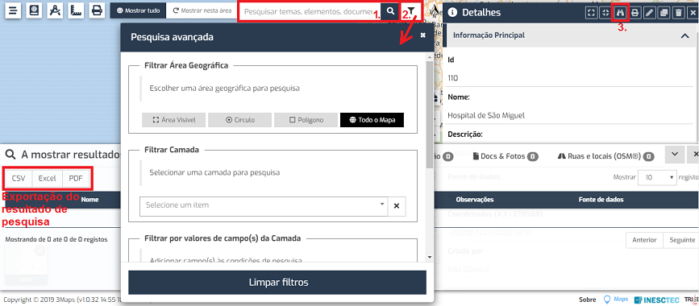

FAQs
As opções de pesquisa da aplicação estão identificadas na figura seguinte. Os resultados das pesquisas são apresentados na parte inferior da janela, divididos em quatro separadores: Elementos | Camadas | Documentos e fotografias | Ruas e locais. O resultado da pesquisa pode ser exportado através das opções indicadas na imagem.
Para localizar no mapa os resultados da pesquisa, é necessário clicar sobre as respetivas linhas, na lista de resultados.

Esta pesquisa devolve os resultados que obedecem ao texto pesquisado, em todo o mapa, nas camadas a que utilizador tem acesso.
Esta pesquisa pode ser filtrada por área geográfica e/ou por definição de uma condição. Neste caso, devolve os elementos do tema selecionado, que obedecem à condição, ou condições de pesquisa. No caso de campos textuais, permite a pesquisa de termos exatos, que contêm ou não contêm determinado valor; no caso de campos numéricos, permite a comparação de operadores lógicos (igual a, diferente de, maior do que, maior ou igual a, menor do que, menor ou igual a).
Esta pesquisa devolve os elementos dos temas selecionados, que se localizam à distância do elemento em causa, definida em metros.
Este documento foi gerado pelo HelpMaker Light — Copyright © Hypervisual 2008-2017.